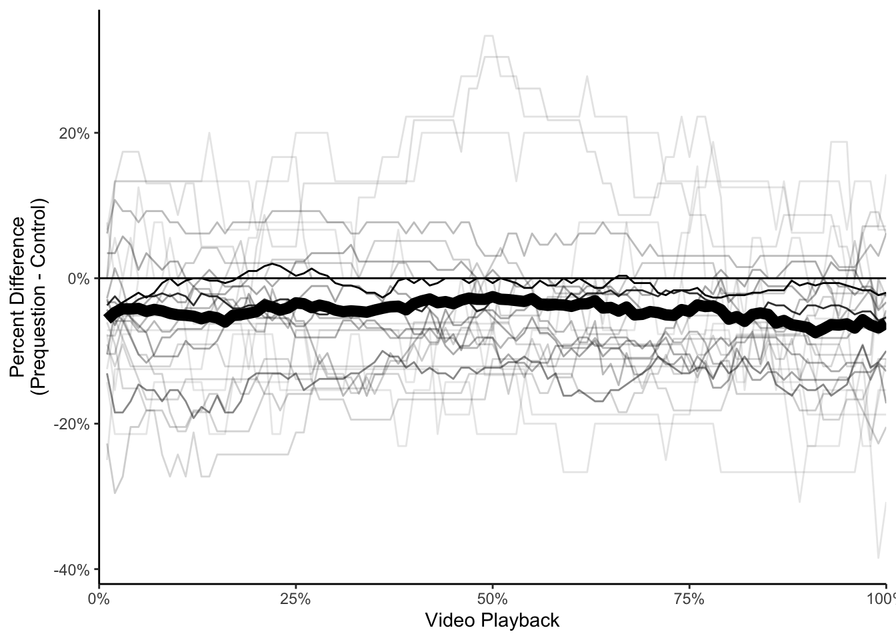
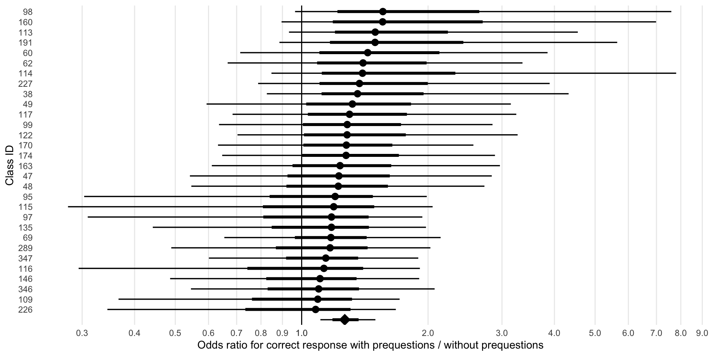

| course_id | level | enrollment | participants | prequestion_accuracy | participation_rate | |
|---|---|---|---|---|---|---|
| 38 | College | 105 | 87 | 0.6551724 | 0.8285714 | |
| 47 | College | 33 | 5 | 0.6000000 | 0.1515152 | |
| 48 | College | 32 | 6 | 0.6666667 | 0.1875000 | |
| 49 | College | 31 | 5 | 0.5500000 | 0.1612903 | |
| 95 | College | 44 | 14 | 0.5178571 | 0.3181818 | |
| 60 | College | 40 | 16 | 0.5781250 | 0.4000000 | |
| 62 | High School | 916 | 278 | 0.4978417 | 0.3034934 | |
| 69 | College | 62 | 48 | 0.2812500 | 0.7741935 | |
| 98 | College | 42 | 36 | 0.3444444 | 0.8571429 | |
| 113 | College | 324 | 84 | 0.7827381 | 0.2592593 | |
| 114 | College | 17 | 13 | 0.7692308 | 0.7647059 | |
| 116 | College | 196 | 91 | 0.4368132 | 0.4642857 | |
| 122 | College | 175 | 65 | 0.4743590 | 0.3714286 | |
| 99 | College | 92 | 61 | 0.7213115 | 0.6630435 | |
| 117 | College | 190 | 44 | 0.5227273 | 0.2315789 | |
| 115 | College | 22 | 15 | 0.3500000 | 0.6818182 | |
| 191 | College | 37 | 15 | 0.6500000 | 0.4054054 | |
| 135 | College | 42 | 33 | 0.7272727 | 0.7857143 | |
| 347 | College | 117 | 73 | 0.5513699 | 0.6239316 | |
| 109 | High School | 94 | 34 | 0.3970588 | 0.3617021 | |
| 227 | Middle School | 70 | 12 | 0.0500000 | 0.1714286 | |
| 97 | High School | 107 | 21 | 0.2976190 | 0.1962617 | |
| 163 | Middle School | 48 | 30 | 0.5416667 | 0.6250000 | |
| 346 | Middle School | 71 | 13 | 0.1538462 | 0.1830986 | |
| 170 | High School | 31 | 18 | 0.6944444 | 0.5806452 | |
| 289 | Middle School | 94 | 86 | 0.5523256 | 0.9148936 | |
| 146 | High School | 20 | 16 | 0.4156250 | 0.8000000 | |
| 226 | Middle School | 51 | 36 | 0.5486111 | 0.7058824 | |
| 160 | College | 113 | 77 | 0.6389610 | 0.6814159 | |
| 174 | College | 291 | 239 | 0.5355649 | 0.8213058 | |
| mean | — | — | 116.9 | 52.36667 | 0.5167634 | 0.5091565 |
ManyClasses 2 Analysis
Descriptives
Summary of participants:
- There are 30 classes across 7 institutions.
- There are 3507 enrolled students, with an average of 116.9 students per class.
- There are 1757 consenting participants, with an average of 58.5666667 participants per class (SD = 68.8049133).
- There are 1571 consenting participants with outcome scores.
| affiliation | n |
|---|---|
| IUB | 6 |
| IUE | 1 |
| IUP | 3 |
| IUS | 2 |
| SFY | 7 |
| UFL | 6 |
| UNL | 5 |
Treatment characteristics
Treatment characteristics summary:
- The average proportion of students who watched both prequestions and control assignments is 0.8984723.
- The average proportion of students who watched the prequestions assignment is 0.8956079 and the control assignment is 0.9013367.
- The median time spent on the assignment was 5.85 minutes.
- The median time spent on the assignment by condition was for prequestions and for
- The average prequestion score across classes was 0.5167634, with a minimum of 0.05 and a maximum of 0.7827381.
Effect of Prequestions on Student Behavior
- The average proportion of students who watched the entire video is 0.5381922.
- The average percentage of the video viewed is 0.668345.
- The average percentage of the video viewed by condition is 0.6448313 for prequestions and 0.6918587 for control.
- The likelihood of not initiating media playback is 0.2157861 for prequestions and 0.1648631 for control.
- The proportion of students who watched both videos is 0.6931891.
- The average percentage of the video viewed by class for students who watched both videos is 0.8341806 for prequestions and 0.8572303 for control.
| course_id | doNotWatch_preq | doNotWatch_cont | doNotWatch_diff |
|---|---|---|---|
| 49.00 | 60.00 | 20.00 | 40.00 |
| 115.00 | 47.73 | 20.45 | 27.27 |
| 47.00 | 20.00 | 0.00 | 20.00 |
| 98.00 | 27.38 | 8.33 | 19.05 |
| 62.00 | 18.75 | 0.00 | 18.75 |
| 160.00 | 41.67 | 25.00 | 16.67 |
| 227.00 | 25.00 | 12.50 | 12.50 |
| 122.00 | 48.48 | 39.39 | 9.09 |
| 99.00 | 7.69 | 0.00 | 7.69 |
| 69.00 | 23.38 | 16.19 | 7.19 |
| 60.00 | 7.14 | 0.00 | 7.14 |
| 117.00 | 6.67 | 0.00 | 6.67 |
| 95.00 | 16.67 | 10.42 | 6.25 |
| 191.00 | 16.67 | 11.11 | 5.56 |
| 347.00 | 18.83 | 14.64 | 4.18 |
| 346.00 | 22.08 | 18.18 | 3.90 |
| 109.00 | 28.57 | 25.27 | 3.30 |
| 97.00 | 11.11 | 8.33 | 2.78 |
| 289.00 | 2.78 | 0.00 | 2.78 |
| 135.00 | 16.44 | 13.70 | 2.74 |
| 226.00 | 29.07 | 27.91 | 1.16 |
| 48.00 | 16.67 | 16.67 | 0.00 |
| 114.00 | 22.95 | 22.95 | 0.00 |
| 116.00 | 6.67 | 6.67 | 0.00 |
| 163.00 | 9.52 | 9.52 | 0.00 |
| 170.00 | 3.33 | 3.33 | 0.00 |
| 174.00 | 23.08 | 23.08 | 0.00 |
| 38.00 | 10.34 | 12.64 | −2.30 |
| 146.00 | 17.65 | 20.59 | −2.94 |
| 113.00 | 26.15 | 35.38 | −9.23 |

Effect of Prequestions on Student Learning
Overall outcome accuracy
The overall outcome accuracy is 0.7126416 (SD = 0.1539722, SE = 0.0281113).
Split by condition
In the control condition, the average outcome accuracy was 0.6880736 (SD = 0.1592772, SE = 0.0290799), and in the prequestions condition, the average outcome accuracy was 0.7372096 (SD = 0.1583048, SE = 0.0289024).
What percent of classes had higher performance in the prequestion condition?
Of the 30 classes, 25 (83.3333333%) had higher performance in the prequestions condition.
| course_id | class_preqLearn | class_contLearn | preqBetter |
|---|---|---|---|
| 49 | 0.8000000 | 0.5000000 | 0.300000000 |
| 60 | 0.8750000 | 0.6785714 | 0.196428571 |
| 62 | 0.8125000 | 0.6250000 | 0.187500000 |
| 160 | 0.9833333 | 0.8500000 | 0.133333333 |
| 191 | 0.9444444 | 0.8333333 | 0.111111111 |
| 95 | 0.4635417 | 0.3854167 | 0.078125000 |
| 99 | 0.7500000 | 0.6730769 | 0.076923077 |
| 170 | 0.7250000 | 0.6500000 | 0.075000000 |
| 227 | 0.8687500 | 0.8031250 | 0.065625000 |
| 97 | 0.4611111 | 0.3986111 | 0.062500000 |
| 115 | 0.4261364 | 0.3636364 | 0.062500000 |
| 113 | 0.8897436 | 0.8282051 | 0.061538462 |
| 98 | 0.9494048 | 0.9047619 | 0.044642857 |
| 135 | 0.6335616 | 0.5958904 | 0.037671233 |
| 117 | 0.8166667 | 0.7833333 | 0.033333333 |
| 174 | 0.7692308 | 0.7384615 | 0.030769231 |
| 116 | 0.4533333 | 0.4266667 | 0.026666667 |
| 38 | 0.8965517 | 0.8706897 | 0.025862069 |
| 122 | 0.7803030 | 0.7575758 | 0.022727273 |
| 69 | 0.7431655 | 0.7287770 | 0.014388489 |
| 289 | 0.6666667 | 0.6527778 | 0.013888889 |
| 347 | 0.7246862 | 0.7146444 | 0.010041841 |
| 114 | 0.9385246 | 0.9303279 | 0.008196721 |
| 226 | 0.5319767 | 0.5261628 | 0.005813953 |
| 109 | 0.5467033 | 0.5412088 | 0.005494505 |
| 146 | 0.6985294 | 0.7169118 | -0.018382353 |
| 346 | 0.7376623 | 0.7662338 | -0.028571429 |
| 163 | 0.8214286 | 0.8571429 | -0.035714286 |
| 47 | 0.7000000 | 0.7500000 | -0.050000000 |
| 48 | 0.7083333 | 0.7916667 | -0.083333333 |

Overall Model
This model is score | trials(trials) ~ condition + (0 + condition + exposure_order | course_id) + (1 | course_id/participant_id). A fixed effect of condition (prequestions vs. control), random effects of condition and exposure per class, and random intercept of participant , nested in random intercept of class. Exposure is included as a random effect because there are two assignments per class, and each assignment may vary in difficulty or other factors that could affect the outcome.

Moderators
Class Level
Exposure order
We confirm here that there’s no consistent fixed effect of exposure order.
Estimate
Intercept 1.1007931800
conditionprequestions 0.2439874680
exposure_orderprequestions_then_control -0.0013233325
conditionprequestions:exposure_orderprequestions_then_control -0.0003760324
Est.Error
Intercept 0.20413188
conditionprequestions 0.08764960
exposure_orderprequestions_then_control 0.10924918
conditionprequestions:exposure_orderprequestions_then_control 0.08274663
Q2.5
Intercept 0.69600872
conditionprequestions 0.08246071
exposure_orderprequestions_then_control -0.21196251
conditionprequestions:exposure_orderprequestions_then_control -0.16016921
Q97.5
Intercept 1.5024016
conditionprequestions 0.4243475
exposure_orderprequestions_then_control 0.2181863
conditionprequestions:exposure_orderprequestions_then_control 0.1622860Number of Assignments
Estimate Est.Error
Intercept 1.1485410897 0.274511970
conditionprequestions 0.2592030418 0.108009070
nbr_other_assessments -0.0030888913 0.010731318
conditionprequestions:nbr_other_assessments -0.0005784275 0.003980395
Q2.5 Q97.5
Intercept 0.614125059 1.699603059
conditionprequestions 0.049840173 0.477482458
nbr_other_assessments -0.024366697 0.017934830
conditionprequestions:nbr_other_assessments -0.007988168 0.007809536Student Level
Grade Level
Estimate Est.Error Q2.5
Intercept 1.22418678 0.22602471 0.7816586
conditionprequestions 0.25644380 0.08321822 0.1106517
levelhighschool -0.75895600 0.29249517 -1.3430223
levelmiddleschool 0.03421185 0.37527890 -0.7053774
conditionprequestions:levelhighschool -0.23454181 0.17090923 -0.5879975
conditionprequestions:levelmiddleschool 0.13120626 0.20819988 -0.2818291
Q97.5
Intercept 1.67284359
conditionprequestions 0.43857778
levelhighschool -0.18544938
levelmiddleschool 0.78148001
conditionprequestions:levelhighschool 0.08498729
conditionprequestions:levelmiddleschool 0.53287119Pretest
Estimate Est.Error Q2.5 Q97.5
Intercept -0.1700193 0.4143293 -0.9578223 0.6824816
conditionprequestions -0.1317024 0.2171807 -0.5618882 0.2960586
pretest 1.3062053 0.4161854 0.4320505 2.0702413
conditionprequestions:pretest 0.4191411 0.2458184 -0.0611335 0.9109878In Major
Estimate Est.Error Q2.5 Q97.5
Intercept 1.05199190 0.2071393 0.64529417 1.4655072
conditionprequestions 0.21313711 0.0955254 0.03192865 0.4123756
in_major 0.09766705 0.1752567 -0.25124247 0.4392359
conditionprequestions:in_major 0.06878901 0.1459336 -0.21320920 0.3674695Prequestion Score
Estimate Est.Error Q2.5
Intercept 0.9410335 0.2111078 0.5278990
conditionprequestions -0.1359334 0.1134044 -0.3430328
prequestion_score 0.2754550 0.1883453 -0.1126185
conditionprequestions:prequestion_score 0.7958311 0.1720077 0.4505461
Q97.5
Intercept 1.3507736
conditionprequestions 0.1040173
prequestion_score 0.6257440
conditionprequestions:prequestion_score 1.1278229Visualization of the interaction between prequestion score and condition
Submission Level
Percentage of video viewed
Estimate Est.Error Q2.5 Q97.5
Intercept 0.89910251 0.2024996 0.49824235 1.2924833
conditionprequestions 0.21657031 0.1050414 0.01826824 0.4341344
viewpct 0.29040711 0.1207213 0.05421348 0.5332300
conditionprequestions:viewpct 0.04653907 0.1259873 -0.19721736 0.2990049Did the student start the video at all?
Estimate Est.Error Q2.5
Intercept 0.9740670 0.2129967 0.55375675
conditionprequestions 0.1387440 0.1262866 -0.09747221
initiate_playback 0.1515584 0.1381412 -0.12870099
conditionprequestions:initiate_playback 0.1530932 0.1458504 -0.13178068
Q97.5
Intercept 1.3961798
conditionprequestions 0.3946439
initiate_playback 0.4138138
conditionprequestions:initiate_playback 0.4380341N Events (clicks?)
Estimate Est.Error Q2.5 Q97.5
Intercept 0.8789407468 0.195097546 0.49165672 1.26967495
conditionprequestions 0.2830196730 0.107513470 0.08166186 0.50495302
nevents 0.0233593130 0.007026262 0.01028609 0.03792326
conditionprequestions:nevents -0.0004721388 0.008535972 -0.01659649 0.01693655Submission time
Estimate Est.Error Q2.5
Intercept 1.13231324 0.21011301 0.71556466
conditionprequestions 0.16809970 0.09798907 -0.01793738
submDaysBeforeDueDate -0.01726933 0.03462103 -0.08634888
conditionprequestions:submDaysBeforeDueDate 0.03818521 0.03204600 -0.02043939
Q97.5
Intercept 1.54755229
conditionprequestions 0.36651862
submDaysBeforeDueDate 0.04984259
conditionprequestions:submDaysBeforeDueDate 0.10634930Exposure Level
delay: days between assignment due date and exam date
Estimate Est.Error Q2.5 Q97.5
Intercept 1.067347365 0.262464920 0.559377619 1.59965098
conditionprequestions 0.124416084 0.112037436 -0.085735420 0.35626069
delay 0.006963882 0.015946763 -0.023597724 0.03858447
conditionprequestions:delay 0.011775632 0.008078036 -0.004355443 0.02749770pct_correct: overall percent correct on the exam items
Estimate Est.Error Q2.5 Q97.5
Intercept -1.8144204 0.3127610 -2.3401440 -1.1165345
conditionprequestions -0.2781119 0.2187833 -0.7091758 0.1444422
pct_correct 4.1089841 0.4269439 3.1532000 4.8468652
conditionprequestions:pct_correct 0.7618218 0.3122631 0.1635884 1.3876894video_length: total duration of video
Estimate Est.Error Q2.5
Intercept 1.422750e+00 0.961500119 -0.436278462
conditionprequestions 2.657384e-01 0.338969874 -0.396794724
video_length -1.074829e-03 0.003499028 -0.008036701
conditionprequestions:video_length -6.253813e-05 0.001217258 -0.002474542
Q97.5
Intercept 3.324472091
conditionprequestions 0.937392656
video_length 0.005644177
conditionprequestions:video_length 0.002317533avg_time_of_prequestions: avg percent of the video elapsed when prequestions are addressed
Estimate Est.Error
Intercept 0.820607938 0.345692333
conditionprequestions 0.102047274 0.190544543
avg_time_of_prequestions 0.001886941 0.002136599
conditionprequestions:avg_time_of_prequestions 0.001577370 0.001513700
Q2.5 Q97.5
Intercept 0.130236704 1.490516956
conditionprequestions -0.264862867 0.481664421
avg_time_of_prequestions -0.002470430 0.005964099
conditionprequestions:avg_time_of_prequestions -0.001417653 0.004525515time_answering_preqs: cumulative time spent addressing prequestions in video
Estimate Est.Error
Intercept 1.0455267981 0.2605429634
conditionprequestions 0.1863621958 0.1188672167
time_answering_preqs 0.0006404681 0.0010993995
conditionprequestions:time_answering_preqs 0.0004732468 0.0006551986
Q2.5 Q97.5
Intercept 0.5309638362 1.550658035
conditionprequestions -0.0370204008 0.434759882
time_answering_preqs -0.0015139699 0.002834161
conditionprequestions:time_answering_preqs -0.0008180715 0.001769061answer_not_provided: was there at least one prequestion where the answer was never presented (learner needed to infer answer)
Estimate Est.Error Q2.5
Intercept 1.0222817 0.2264354 0.5799692
conditionprequestions 0.3580046 0.1009772 0.1602963
answer_not_provided 0.2207364 0.2078552 -0.2006875
conditionprequestions:answer_not_provided -0.1997599 0.1334326 -0.4557807
Q97.5
Intercept 1.47459643
conditionprequestions 0.55774333
answer_not_provided 0.62109999
conditionprequestions:answer_not_provided 0.06980636require_memorization: Does any prequestion involve memorization of a word/term/phrase?
Estimate Est.Error Q2.5
Intercept 1.1141236 0.21012707 0.6920552
conditionprequestions 0.2395467 0.07619134 0.1015266
require_memorization 0.2151660 0.43621216 -0.6364844
conditionprequestions:require_memorization 0.3458060 0.33676746 -0.3097383
Q97.5
Intercept 1.524643
conditionprequestions 0.401559
require_memorization 1.056479
conditionprequestions:require_memorization 1.017268preq_difficulty: percent correct (overall) on the prequestions associated with the video
Estimate Est.Error Q2.5
Intercept 0.86272561 0.2957645 0.29429106
conditionprequestions 0.28192026 0.1821148 -0.06757444
preq_difficulty 0.51946644 0.4076614 -0.28090048
conditionprequestions:preq_difficulty -0.06230942 0.3203573 -0.70056746
Q97.5
Intercept 1.4560099
conditionprequestions 0.6443488
preq_difficulty 1.3061200
conditionprequestions:preq_difficulty 0.5688507Plot of moderator effects
Secondary Analyses
Percentage of video viewed
With all students
Estimate Est.Error Q2.5 Q97.5
Intercept 0.7031037 0.02682922 0.64958241 0.75574697
conditionprequestions -0.0494014 0.01579221 -0.08103898 -0.01880517With only students who initiated playback
Estimate Est.Error Q2.5 Q97.5
Intercept 0.82403735 0.01791402 0.78854179 0.85995563
conditionprequestions -0.01231315 0.01460721 -0.04153329 0.01669898Did the student start the video at all?
Estimate Est.Error Q2.5 Q97.5
Intercept 2.4649872 0.2398459 2.0202533 2.967505
conditionprequestions -0.4200483 0.1431797 -0.7015849 -0.139487With moderators
Pretest Score
Estimate Est.Error Q2.5 Q97.5
Intercept 1.42798580 0.3996310 0.6599722 2.21662764
conditionprequestions -0.48972694 0.2911002 -1.0737821 0.07762444
pretest 1.06503647 0.3849013 0.3101477 1.81520501
conditionprequestions:pretest 0.09181035 0.3241321 -0.5356187 0.73765419Prequestion Score
initiate_playback ~ condition*prequestion_score + (1 | course_id/participant_id) + (0 + exposure_order + prequestion_score*condition | course_id)
Estimate Est.Error Q2.5
Intercept 1.9952092 0.2678905 1.4929990
conditionprequestions -0.6148967 0.2286433 -1.0560127
prequestion_score 0.8677741 0.2633559 0.3435638
conditionprequestions:prequestion_score 0.5581751 0.3319382 -0.1058271
Q97.5
Intercept 2.5461145
conditionprequestions -0.1587218
prequestion_score 1.3739702
conditionprequestions:prequestion_score 1.1964479Alternate version, treating the interaction as only a fixed effect.
initiate_playback ~ condition*prequestion_score + (1 | course_id/participant_id) + (0 + exposure_order + prequestion_score + condition | course_id)
Estimate Est.Error Q2.5
Intercept 1.9360091 0.2583357 1.4530217
conditionprequestions -0.7683197 0.1917910 -1.1476221
prequestion_score 0.8834829 0.2731825 0.3352216
conditionprequestions:prequestion_score 0.8381171 0.2623678 0.3383222
Q97.5
Intercept 2.4637996
conditionprequestions -0.3856397
prequestion_score 1.4082128
conditionprequestions:prequestion_score 1.3589235In Major
Estimate Est.Error Q2.5 Q97.5
Intercept 2.3507741 0.2646021 1.8557683 2.910678715
conditionprequestions -0.3561345 0.1786720 -0.7016358 0.005526575
in_major 0.2993937 0.2588503 -0.2059622 0.812820765
conditionprequestions:in_major -0.1239462 0.2439661 -0.6142948 0.354747571Grade Level
Estimate Est.Error Q2.5
Intercept 2.38588231 0.2325130 1.9591093
conditionprequestions -0.42735430 0.1572041 -0.7330763
levelhighschool -0.06026309 0.3683729 -0.7968064
levelmiddleschool 0.02072260 0.4638414 -0.9101533
conditionprequestions:levelhighschool 0.02432223 0.3538696 -0.6807828
conditionprequestions:levelmiddleschool -0.03941907 0.4212336 -0.8786117
Q97.5
Intercept 2.8733329
conditionprequestions -0.1088398
levelhighschool 0.6838269
levelmiddleschool 0.9628728
conditionprequestions:levelhighschool 0.7092848
conditionprequestions:levelmiddleschool 0.7841427Submission Time
Estimate Est.Error
Intercept 2.913045389 0.30716162
conditionprequestions -0.479265719 0.20027147
submDaysBeforeDueDate 0.133336066 0.07862169
conditionprequestions:submDaysBeforeDueDate -0.009572619 0.06992095
Q2.5 Q97.5
Intercept 2.346178258 3.54677413
conditionprequestions -0.871064734 -0.08318514
submDaysBeforeDueDate -0.006813432 0.30212494
conditionprequestions:submDaysBeforeDueDate -0.146047512 0.12925940